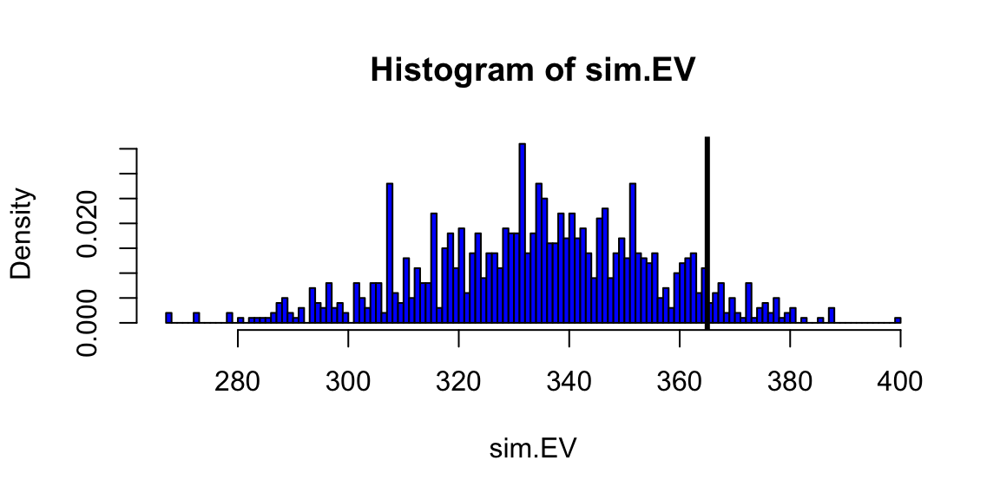

“Prediction is very difficult, especially about the future. Niels Bohr, Danish physicist and Nobel laureate”
The history of data analysis is closely intertwined with the development of pattern matching techniques. The ability to identify and understand patterns in data has been crucial for scientific discoveries, technological advancements, and decision-making. From the early days of astronomy to modern machine learning, pattern matching has played a pivotal role in advancing our understanding of the world around us. This chapter explores the key concepts of pattern matching, its historical development, and its impact on data analysis.
Data science involves two major steps, collection and cleaning of data and building a model or applying an algorithm. In this chapter we present the process of building predictive models. To illustrate the process think of your data as being generated by a black box on which a set of input variables \(x\) go through the box and generate an output variable \(y\).
11.1 Why Pattern Matching?
For Gauss, Laplace and many other scientist, the main problem was the problem of estimating parameters, while the relationship between the variables was known and was usually linear, like in the shape of the earth example of multiplicative, e.g. Newton’s second law \(F = ma\). However, in many cases, the relationship between the variables is unknown and cannot be described by a simple mathematical model. Halevy, Norvig, and Pereira (2009) discuss the problem of human behavior and natural languages. Neither can be described by a simple mathematical model.
This is case, the pattern matching approach is a way to use data to find those relations. In data analysis, pattern matching is the process of identifying recurring sequences, relationships, or structures within a dataset. It’s like looking for a specific puzzle piece within a larger picture. By recognizing these patterns, analysts can gain valuable insights into the data, uncover trends, make predictions, and ultimately improve decision-making. Sometimes initial pattern matching analysis leads to a scientific discovery. Consider a case of mammography and early pattern matching.
Example 11.1 (Mammography and Early Pattern Matching) The use of mammograms for breast cancer detection relied on simple pattern matching in its initial stages. Radiologists visually examined the X-ray images for specific patterns indicative of cancer, such as: dense areas of tissue appearing different from surrounding breast tissue (a.k.a masses) and small white spots of calcium deposits called microcalcifications. These patterns were associated with early-stage cancer and could be easily missed by visual inspection alone.
Radiologists relied on their expertise and experience to identify these patterns and distinguish them from normal breast tissue variations. This process was subjective and prone to errors, particularly with subtle abnormalities or in dense breasts. Subtle abnormalities, especially in dense breasts, could be easily missed using visual assessment alone. Despite these limitations, pattern matching played a crucial role in the early detection of breast cancer, saving countless lives. It served as the foundation for mammography as a screening tool.
Albert Solomon, a German surgeon, played a pivotal role in the early development of mammography (Nicosia et al. (2023)). His most significant contribution was his 1913 monograph, “Beitr{"a}ge zur Pathologie und Klinik der Mammakarzinome” (Contributions to the Pathology and Clinic of Breast Cancers). In this work, he demonstrated the potential of X-ray imaging for studying breast disease. He pioneered the use of X-rays, he compared surgically removed breast tissue images with the actual tissue and was able to identify characteristic features of cancerous tumors, such as their size, shape, and borders. He was one of the first to recognize the association between small calcifications appearing on X-rays and breast cancer.
Presence of calcium deposits is correlated with brest cancer and is still prevailing imaging biomarkers for its detection. Although discovery of the deposit-cancer asosciation induced scientific discoveries, the molecular mechanisms that leads to the formation of these calcium deposits, as well as the significance of their presence in human tissues, have not been completely understood (Bonfiglio et al. (2021)).
11.1.1 Richard Feynman on Pattern Matching and Chess
Richard Feynman, the renowned physicist, was a strong advocate for the importance of pattern matching and its role in learning and problem-solving. He argued that in many scientific discoveries, start with pattern matching. He emphasized that experts in any field, whether it’s chess, science, or art, develop a strong ability to identify and understand relevant patterns in their respective domains.
He often used the example of chess to illustrate this concept (Feynman (n.d.)). Feynman argued that a skilled chess player doesn’t consciously calculate every possible move. Instead, they recognize patterns on the board and understand the potential consequences of their actions. For example, a chess player might recognize that having a knight in a certain position is advantageous and will lead to a favorable outcome. This ability to identify and understand patterns allows them to make quick and accurate decisions during the game. Through playing and analyzing chess games, players develop mental models that represent their understanding of the game’s rules, strategies, and potential patterns. These mental models allow them to anticipate their opponent’s moves and formulate effective responses.
He emphasized that this skill could be transferred to other domains, such as scientific research, engineering, and even everyday problem-solving.
Here is a quote from his interview
Richard Feynman
Let’s say a chess game. And you don’t know the rules of the game, but you’re allowed to look at the board from time to time, in a little corner, perhaps. And from these observations, you try to figure out what the rules are of the game, what [are] the rules of the pieces moving.
You might discover after a bit, for example, that when there’s only one bishop around on the board, that the bishop maintains its color. Later on you might discover the law for the bishop is that it moves on a diagonal, which would explain the law that you understood before, that it maintains its color. And that would be analogous we discover one law and later find a deeper understanding of it.
Ah, then things can happen–everything’s going good, you’ve got all the laws, it looks very good–and then all of a sudden some strange phenomenon occurs in some corner, so you begin to investigate that, to look for it. It’s castling–something you didn’t expect …..
After you’ve noticed that the bishops maintain their color and that they go along on the diagonals and so on, for such a long time, and everybody knows that that’s true; then you suddenly discover one day in some chess game that the bishop doesn’t maintain its color, it changes its color. Only later do you discover the new possibility that the bishop is captured and that a pawn went all the way down to the queen’s end to produce a new bishop. That could happen, but you didn’t know it.
In an interview on Artificial General Intelligence (AGI), he compares human and machine intelligence
Richard Feynman
First of all, do they think like human beings? I would say no and I’ll explain in a minute why I say no. Second, for “whether they be more intelligent than human beings: to be a question, intelligence must first be defined. If you were to ask me are they better chess players than any human being? Possibly can be , yes ,”I’ll get you some day”. They’re better chess players than most human beings right now!
By 1996, computers had become stronger than GMs. With the advent of deep neural networks in 2002, Stockfish15 is way stronger. A turning point on our understanding of AI algorithms was AlphaZero and Chess
AlphaGo coupled with deep neural networks and Monte Carlo simulation provided a gold standard for chess. AlphaZero showed that neural networks can self-learn by competing against itself. Neural networks are used to pattern match and interpolate both the policy and value function. This implicitly performs “feature selection”. Whilst humans have heuristics for features in chess, such as control center, king safety and piece development, AlphaZero “learns” from experience. With a goal of maximizing the probability of winning, neural networks have a preference for initiative, speed and momentum and space over minor material such as pawns. Thus reviving the old school romantic chess play.
Feynman discusses how machines show intelligence:
Richard Feynman
With regard to the question of whether we can make it to think like [human beings], my opinion is based on the following idea: That we try to make these things work as efficiently as we can with the materials that we have. Materials are different than nerves, and so on. If we would like to make something that runs rapidly over the ground, then we could watch a cheetah running, and we could try to make a machine that runs like a cheetah. But, it’s easier to make a machine with wheels. With fast wheels or something that flies just above the ground in the air. When we make a bird, the airplanes don’t fly like a bird, they fly but they don’t fly like a bird, okay? They don’t flap their wings exactly, they have in front, another gadget that goes around, or the more modern airplane has a tube that you heat the air and squirt it out the back, a jet propulsion, a jet engine, has internal rotating fans and so on, and uses gasoline. It’s different, right?
So, there’s no question that the later machines are not going to think like people think, in that sense. With regard to intelligence, I think it’s exactly the same way, for example they’re not going to do arithmetic the same way as we do arithmetic, but they’ll do it better.
11.2 Correlations
Arguable, the simplest form of pattern matching is correlation. Correlation is a statistical measure that quantifies the strength of the relationship between two variables. It is a measure of how closely two variables move in relation to each other. Correlation is often used to identify patterns in data and determine the strength of the relationship between two variables. It is a fundamental statistical concept that is widely used in various fields, including science, engineering, finance, and business.
Let’s consider the correlation between returns on Google stock and S&P 500 stock index. The correlation coefficient is a measure of the strength and direction of the linear relationship between two variables. It is a number between -1 and 1.
Example 11.2 (Google Stock Returns)Figure 11.1 shows the scattershot of Google and S&P 500 daily returns
There are plenty of engineering applications. Given the availability of sensors, predictive maintenance became a widespread approach. By predicting when equipment is likely to fail, engineers can take proactive steps to prevent failures and reduce downtime. Another example is traffic forecasting, which is used by drivers and engineers to plan future road and bridge construction projects. Prediction and forecasting are also used in weather forecasting, resource management, and many other applications.
Many problems in machine learning involve an output \(y_i\) with \(x_i\) a high-dimensional input variable. The objective function takes the form, with \(\theta=(\theta_1, \ldots, \theta_p)\), \[
l(\theta) =\sum_{i=1}^n l(y_i, f_{\theta} (x_i)) +\lambda \sum_{j=1}^p \phi(\theta_j),
\] Deep learning constructs as a composition (rather than the traditional additive) of semi-affine functions. As such the optimization problem of training a deep learner involves a highly nonlinear objective function. Stochastic gradient descent (SGD) is a popular tool based on back-propagation (a.k.a. the chain rule). Our goal is to show how data augmentation techniques can be seamlessly applied in this context too and provide efficiency gains. The goal then is to find a maximum a posteriori (MAP) mode from a probabilistic model defined by the conditional distributions \[\begin{align*}
&p(y | \theta)\propto \exp\{- l (y, f_{\theta}(x))\},\; \; p(\theta)\propto \exp\{-\lambda\phi(\theta)\},\\
&p(\theta | y)=\frac{p(y | \theta)p(\theta)}{p(y)} \propto \exp\{- l(y, f_{\theta}(x))-\lambda \phi(\theta)\}.
\end{align*}\] Here \(p(\theta)\) can be interpreted as a prior probability distribution and the log-prior as the regularization penalty.
Traditional modeling culture employs statistical models characterized by single-layer transformations, where the relationship between input variables and output is modeled through direct, interpretable mathematical formulations. These approaches typically involve linear combinations, additive structures, or simple nonlinear transformations that maintain analytical tractability and statistical interpretability. The list of widely used models includes:
Generalized Linear Models (GLM) \(y = f^{-1}(\beta^T x)\)
In contrast to these traditional single-layer approaches, Deep Learning employs sophisticated high-dimensional multi-layer neural network architectures that can capture complex, non-linear relationships in data through hierarchical feature learning. Each layer transforms the input data through by applying an affine transformation and a non-linear activation function. The depth and complexity of these architectures allow deep learning models to automatically discover intricate patterns and representations from raw input data, making them particularly effective for tasks involving high-dimensional inputs such as image recognition, natural language processing, and complex time series analysis. Unlike traditional statistical models that rely on hand-crafted features, deep learning models learn hierarchical representations directly from the data, with early layers capturing simple features (like edges in images) and deeper layers combining these into more complex, abstract representations.
We wish to find map \(f\) such that \[\begin{align*}
y &= f ( x ) \\
y &= f ( x_1 , \ldots , x _p )
\end{align*}\]
Essentiall, the goal is to perform the pattern matching, also known as nonparametric regression. It involves finding complex relationships in data without assuming a specific functional form. In deep learning, we use composite functions rather than additive functions. We write the superposition of univariate functions as \[
f = f_1 \circ \ldots \circ f_L \; \; \text{versus} \; \; f_1 + \ldots + f_L
\] where the composition of functions creates a hierarchical structure. The optimization process that finds the parametrs of those functions relies on Stochastic Gradient Descent (SGD), which iteratively updates parameters to minimize the loss function. Back-propagation, which is essentially the chain rule from calculus, is used to efficiently compute gradients through the network layers.
A typical prediction problem involves building a rule that maps observed inputs \(x\) into the output \(y\). The inputs \(x\) are often called predictors, features, or independent variables, while the output \(y\) is often called the response or dependent variable. The goal is to find a predictive rule \[
y = f(x).
\]
The map \(f\) can be viewed as a black box which describes how to find the output \(y\) from the input \(x\). One of the key requirement of \(f\) is that we should be able to efficiently find this function using an algorithm. In the simple case \(y\) and \(x\) are both univariate (scalars) and we can view the map as
The goal of machine learning is to reconstruct this this map from observed data. In a multivariate setting \(x = (x_1,\ldots,x_p)\) is a list of \(p\) variables. This leads to a model of the form \(y = f(x_1,\ldots,x_p)\). There are a number of possible goals of analysis, such as estimation, inference or prediction. The main one being prediction.
The prediction task is to calculate a response that corresponds to a new feature input variable. Example of af an inference is the task of establishing a causation, with the goal of extracting information about the nature of the black box association of the response variable to the input variables.
In either case, the goal is to use data to find a pattern that we can exploit. The pattern will be ``statistical” in its nature. To uncover the pattern we use a training dataset, denoted by \[
D = (y_i,x_i)_{i=1}^n
\]
where \(x_i\) is a set of \(p\) predictors ans \(y_i\) is response variable. Prediction problem is to use a training dataset \(D\) to design a rule that can be used for predicting output values \(y\) for new observations \(x\).
Let \(f(x)\) be predictor of \(y\), we will use notation \[
\hat{y} = f(x).
\]
To summarize, we will use the following notation.
\(y\)
output variable (response/outcome)
\(x\)
input variable (predictor/covariate/feature)
\(f(x)\)
predictive rule
\(\hat y\)
predicted output value
We distinguish several types of input or output variables. First, binary variables that can only have two possible values, e.g. yes/no, left/right, 0/1, up/down, etc. A generalization of binary variable is a categorical variable that can take a fixed number of possible values, for example, marriage status. Additionally, some of the categorical variable can have a natural order to them, for example education level or salary range. Those variables are called ordinal. Lastly, the most common type of a variable is quantitative which is described by a real number.
Depending on the type of the output variable, there are three types of prediction problems. When \(y\) is binary \(y\in \{0,1\}\) or categorical, \(y\in \{0,\ldots,K\}\), for \(K\) possible categories, the prediction problem is called classification. When \(y\) is any number \(y \in R\), this is known as a regression. Finally, when \(y\) is ordinal, this problem known as ranking.
There are several simple predictive rules we can use to predict the output variable \(y\). For example, in the case of regression problem, the simplest rule is to predict the average value of the output variable. This rule is called the mean rule and is defined as \[
f(x) = \bar{y} = \frac{1}{n} \sum_{i=1}^n y_i.
\]
Notice, this model does not depend on the input variable \(x\) and will predict the same value for all observations. This rule is simple and easy to implement, but it is not very accurate. A more sophisticated rule is the nearest neighbor rule. This rule predicts the output value \(y\) for a new observation \(x\) by finding the closest observation in the training dataset and using its output value. The nearest neighbor rule is defined as \[
f(x) = y_{i^*},
\]
where \(i^* = \arg\min_{i=1,\ldots,n} \|x_i - x\|\) is the index of the closest observation in the training dataset. These two models represent two extreme cases of predictive rules: the mean rule is “stubborn” (it always predicts the same value) and the nearest neighbor rule is “flexible” (can be very sensitive to small changes in the inputs). Using the language of statistics the mean rule is of high bias and low variance, while the nearest neighbor rule is of low bias and high variance. Although those two rules are simple, they sometimes lead to useful models that can be used in practice. Further, those two models represent a trade-off between accuracy and complexity (a.k.a bias-variance trade-off). We will discuss this trade-off in more detail in the later section.
The mean model and nearest neighbor model belong to a class of so-called non-parametric models. The non-parametric models do not make explicit assumption about the form of the function \(f(x)\). In contrast, parametric models assume that the predictive rule \(f(x)\) belongs to a specific family of functions and each function in this family is defined by setting values of the parameters.
11.4 Prediction Accuracy
After we fit our model and find the optimal value of the parameter \(\theta\), denoted by \(\hat \theta\), we need to evaluating the accuracy of a predictive model. It involves comparing the model’s predictions to actual outcomes. We can simply use the value of the loss function from the training step to evaluate model’s predictive power. However, this only tells us how well the model fits the training data. It doesn’t tell us how well the model will perform on unseen data. To evaluate the model’s performance on unseen data, we need to use a different approach.
The most common approach is to split the data into training and test sets. The training set is used to train the model, while the test set is used to evaluate its performance. This approach is known as the train-test split. It is a simple and effective way to evaluate how well model predicts unseen for unseen inputs.
Another approach is to use cross-validation. It involves splitting the data into smaller subsets and using them to train and test the model multiple times. When our sample size is small, this allows for a more robust estimate of the model’s performance than simply splitting the data into a single training and test set. For small data sets, simple train-test split approach will be sensitive to choice of test samples, thus the estimated predicted performance will be unstable (high variance). Cross-validation helps to reduce this variance by averaging the performance across multiple folds. This makes the performance estimate more robust and less sensitive to the choice of test samples.
Cross-validation involves several steps:
Split the data: The data is randomly divided into \(k\) equal-sized chunks (folds).
Train and test the model: For each fold, the model is trained on \(k-1\) folds and tested on the remaining fold. This process is repeated \(k\) times, ensuring each fold is used for testing once.
Evaluate the model: The performance of the model is evaluated on each fold using a chosen metric, such as accuracy, precision, recall, or F1 score.
Report the average performance: The average of the performance metrics across all k folds is reported as the final estimate of the model’s performance.
A common choice for \(k\) is 5 or 10. When \(K=n\), this is known as leave-one-out cross-validation. This method can be computationally expensive but is less likely to overfit the data. Stratified cross-validation ensures that each fold contains approximately the same proportion of each class as in the entire dataset. This is important for imbalanced datasets where one class is significantly larger than the others.
Notice, that cross-validation requires re-training the model multiple times, which can be computationally expensive. Thus, for large datasets, we typically prefer simple train-test split. However, for small datasets, cross-validation can provide a more robust estimate of the model’s performance.
Either method is limited to evaluating the model’s performance on data that is available to the modeler. What if we start using our model on data that is different from the training and test sets? Unlike in physics, when a model represents a law that is universal, in data science, we are dealing with data that is generated by a process that is not necessarily universal. For example, if we are building a model to predict the price of a house, we can train and test the model on data from a specific city. However, if we start using the model to predict the price of a house in a different city, the model might not perform as well. This is because the data from the new city might be different from the data used to train and test the model. This is known as the problem of generalization. It refers to the ability of a model to perform well on data that is different from the training and test sets.
11.4.1 Evaluation Metrics for Regression
There are several metrics that can be used to evaluate the performance of regression models. We can simply use the same function as we use for fitting the model, e.g. least squares \[
\text{MSE} = \dfrac{1}{m}\sum_{i=1}^n (y_i -\hat y_i)^2,
\] here \(\hat y_i\) is the predicted value of the i-th data point by the model \(\hat y_i = f(x_i,\hat\theta)\) and \(m\) is the total number of data points used for the evaluation. This metric is called the Mean Squared Error (MSE). It is the average squared difference between the actual and predicted values. Lower MSE indicates better model performance, as it means the model’s predictions are closer to the actual values.
A slight variation of this metric is Root Mean Squared Error (RMSE). This is the square root of MSE and is also commonly used due to its units being the same as the target variable. \[
\text{RMSE} = \sqrt{\text{MSE}}.
\] However, MSE is sensitive to outliers, as it squares the errors, giving more weight to large errors. This can lead to misleading results when the data contains outliers.
Median Absolute Error (MAE) solves the sensetivity to the outliers problem. It is the median of the absolute errors, providing a more robust measure than MAE for skewed error distributions \[
\text{MAE} = \dfrac{1}{m}\sum_{i=1}^n |y_i -\hat y_i|.
\] A variation of it is the Mean Absolute Percentage Error (MAPE), which is the mean of the absolute percentage errors \[
\text{MAPE} = \dfrac{1}{m}\sum_{i=1}^n \left | \dfrac{y_i -\hat y_i}{y_i} \right |.
\]
Alternative way to measure the predictive quility is to use the coefficient of determination, also known as the R-squared value, which measures the proportion of variance in the target variable that is explained by the model. Higher R-squared indicates better fit. However, R-squared can be misleading when comparing models with different numbers of features. R-squared is defined as follows \[
R^2 = 1 - \dfrac{\sum_{i=1}^n (y_i -\hat y_i)^2}{\sum_{i=1}^n (y_i -\bar y_i)^2},
\] where \(\bar y_i\) is the mean of the target variable. R-squared is a relative measure of fit, so it can be used to compare different models. However, it is not an absolute measure of fit, so it cannot be used to determine whether a model is good or bad. It is also sensitive to the number of features in the model, so it cannot be used to compare models with different numbers of features.
Finally, we can use graphics to evaluate the model’s performance. For example, we can scatterplot the actual and predicted values of the target variable to visually compare them. We can also plot the histogram of a boxplot of the residuals (errors) to see if they are normally distributed.
11.4.2 Evaluation Metrics for Classification
Accuracy is the most fundamental metric used to evaluate models. It is defined as the ratio of the number of correct predictions to the total number of predictions. The formula is given by \[\text{Accuracy} = \frac{\text{TP+TN}}{\text{TP+TN+FP+FN}},\] where TP, TN, FP, and FN are the numbers of true positives, true negatives, false positives, and false negatives, respectively. However, it can be misleading for imbalanced datasets where one class is significantly larger than others. For example, if 95% of the data belongs to one class, a model that always predicts this class will be 95% accurate, even though it’s not very useful.
A more comprehensive understanding of model performance can be achieved by calculaitng the sensitivity (a.k.a precision) and specificity (a.k.a. recall) as well as confusion matrix discussed in Section 2.4. The confusion matrix is
Actual/Predicted
Positive
Negative
Positive
TP
FN
Negative
FP
TN
Precision measures the proportion of positive predictions that are actually positive. It is useful for evaluating how good the model is at identifying true positives. Recall measures the proportion of actual positives that are correctly identified by the model. It is useful for evaluating how good the model is at not missing true positives.
Then we can use those to calculate F1 Score which is is a harmonic mean of precision and recall, providing a balanced view of both metrics. Higher F1 score indicates better overall performance. If misclassifying certain instances is more costly than others, weighted metrics account for these different costs. For imbalanced datasets, metrics like F1 score or balanced accuracy are important to avoid misleading interpretations.
Sometimes, we use multiple metrics to get a comprehensive assessment of the model’s performance. Additionally, consider comparing the model’s performance to a baseline model or other existing models for the same task. Sometimes, it is hard to beat a “coin flip” classification model, when the model predicts the class randomly with equal probability. In regression, a simple baseline model is \(f(x_i) = \bar y\), which is the mean of the target variable.
11.4.3 Some Examples of Prediction Problems
Prediction and forecasting is most frequent problem in data analysis and the most common approach to solve the prediction problem is via the pattern matching. Prediction and forecasting are two closely related concepts that are often used interchangeably. In business and engineering the main motivation for prediction and forecasting is to make better decisions. In science, the main motivation is to test and validate theories. Prediction and forecasting help to identify trends and patterns in historical data that would otherwise remain hidden. This allows analysts to make informed decisions about the future based on what they know about the past. By using prediction models, analysts can identify potential risks and opportunities that may lie ahead. This information can then be used to develop proactive strategies to mitigate risks and capitalize on opportunities. In many business applications the concern is improving efficiency of a system. For example to improve logistic chains and to optimally allocate resources, we need to forecast demand and supply and to predict the future prices of the resources. By predicting future sales, businesses can better plan their marketing and sales efforts. This can lead to increased sales and profitability. Prediction and forecasting can be used to identify and mitigate potential risks, such as financial losses, supply chain disruptions, and operational failures.
Example 11.3 (Obama Elections) Elections 2012: Bayes and Nate Silver
library(plyr)# Source: "http://www.electoral-vote.com/evp2012/Pres/pres_polls.csv"election.2012=read.csv("../data/pres_polls.csv")# Remove a pollster: elect2012 <- election.2012[!grepl('Rasmussen', election.2012$Pollster),]elect2012 <- election.2012# Aggregrate the dataelect2012 <-ddply(elect2012, .(state), subset, Day ==max(Day))elect2012 <-ddply(elect2012, .(state), summarise, R.pct =mean(GOP), O.pct =mean(Dem), EV =mean(EV))
library(usmap)plot_usmap(data = win.probs, values ="Obama") +scale_fill_continuous(low ="red", high ="blue", name ="Obama Win Probability", label = scales::comma) +theme(legend.position ="right")
Probabilities of Obama winning by state
We use those probabilities to simulate the probability of Obama winning the election. First, we calculate the probability of Obama having >270 EV or more
library(lattice)# Lattice Graphdensityplot(sim.EV, plot.points ="rug", xlab ="Electoral Votes for Obama", panel =function(x, ...) {panel.densityplot(x, ...)panel.abline(v =270)panel.text(x =285, y =0.01, "270 EV to Win")panel.abline(v =332)panel.text(x =347, y =0.01, "Actual Obama")}, main ="Electoral College Results Probability")

Results of recent state polls in the 2008 United States Presidential Election between Barack Obama and John McCain.
# Source: LearnBayes library#| fig-height: 6election.2008=read.csv("../data/election2008.csv")data(election.2008)attach(election.2008)## Dirichlet simulationprob.Obama =function(j) { p=rdirichlet(5000,500*c(M.pct[j],O.pct[j],100-M.pct[j]-O.pct[j])/100+1)mean(p[,2]>p[,1]) }## sapply function to compute Obama win prob for all statesObama.win.probs=sapply(1:51,prob.Obama)## sim.EV functionsim.election =function() { winner =rbinom(51,1,Obama.win.probs)sum(EV*winner) }sim.EV =replicate(1000,sim.election())## histogram of simulated electionhist(sim.EV,min(sim.EV):max(sim.EV),col="blue",prob=T)abline(v=365,lwd=3) # Obama received 365 votestext(375,30,"Actual \n Obama \n total")
Here are a few important considerations when building predictive models:
1. Model Selection: Choosing the right model for the relationship between \(x\) and \(y\) is crucial and involves navigating a fundamental trade-off between model complexity and generalization ability. If the chosen model is too simple (e.g., linear regression when the true relationship is polynomial), it might underfit the data and fail to capture important relationships, leading to high bias and poor performance on both training and test data. Conversely, a model that is too complex (e.g., high-degree polynomials or deep neural networks with insufficient data) might overfit the data by memorizing training examples rather than learning the underlying pattern, resulting in excellent training performance but poor generalization to unseen examples. This problem becomes even more complex when dealing with non-linear relationships, high-dimensional data, or noisy data, where the optimal model complexity is not immediately obvious and may require systematic experimentation with different model architectures, regularization techniques, and hyperparameter tuning to find the right balance between capturing the true signal while avoiding noise.
2. Overfitting and Underfitting: Overfitting occurs when the model fits the training data too closely, capturing not only the true underlying relationship but also random noise and idiosyncrasies specific to the training dataset. This phenomenon typically manifests when a model has too many parameters relative to the amount of training data available, allowing it to essentially “memorize” the training examples rather than learning the generalizable patterns. The model may achieve excellent performance metrics on the training data (low training error) but will perform poorly on new, unseen data (high generalization error). This is because the model has learned to recognize specific noise patterns in the training data that don’t exist in the broader population. Common signs of overfitting include a large gap between training and validation/test performance, or performance that improves on training data while degrading on validation data during training iterations.
Underfitting occurs when the model is too simple and fails to capture the true relationship between x and y, often due to insufficient model complexity or inadequate training. This can happen when using a model that is inherently too simple for the problem at hand (e.g., linear regression for a highly non-linear relationship), when the model hasn’t been trained for enough iterations, or when regularization is applied too aggressively. Underfitting results in poor performance on both training and test data, as the model lacks the capacity to learn the underlying patterns in the data. The model essentially misses important features or relationships that are necessary for accurate predictions. Unlike overfitting, underfitting typically shows similar poor performance across training, validation, and test sets, indicating that the model is not capturing the signal in the data regardless of the dataset.
3. Data Quality and Quantity: The accuracy of predictions heavily relies on the quality and quantity of the available data. If the data is noisy, inaccurate, or incomplete, it can lead to misleading predictions. A sufficient amount of data is also crucial to ensure the model can learn the underlying relationship effectively. Insufficient data can result in underfitting and poor generalization.
Data quality issues can manifest in various forms, including missing values, inconsistent formatting, labeling errors, and biased sampling. These problems are particularly acute in machine learning applications where large volumes of labeled data are required for training. To address these challenges, companies have emerged that specialize in data quality improvement and annotation services.
Companies like Scale AI and Toloka provide platforms that help organizations improve data quality through human-in-the-loop annotation and validation processes. These platforms employ large networks of human annotators who can perform tasks such as image labeling, text classification, data validation, and quality control. Scale AI, for example, offers services for creating high-quality training datasets through human annotation, with built-in quality control mechanisms that include multiple annotators per task and consensus-based validation. Their platform can handle various data types including images, text, and video, making it suitable for computer vision, natural language processing, and other AI applications.
Toloka, similarly, provides a crowdsourcing platform that connects businesses with a global network of contributors who can perform data labeling, content moderation, and quality assessment tasks. Their platform includes quality control features such as skill-based routing, where tasks are assigned to annotators based on their demonstrated expertise, and dynamic overlap, where multiple workers verify the same data to ensure accuracy.
These platforms help address several key data quality challenges: they can identify and correct labeling errors through consensus mechanisms, handle missing data through targeted collection efforts, and ensure consistency in data formatting and annotation standards. By leveraging human expertise at scale, these services enable organizations to create more reliable training datasets, which in turn leads to better-performing machine learning models and more accurate predictions.
4. Model Explainability: In many applications, it is crucial to understand how the model arrives at its predictions. This is particularly important in areas like healthcare or finance, where transparency and interpretability are essential. Some models, particularly complex ones like deep neural networks, can be difficult to interpret, making it challenging to understand the rationale behind their predictions. However, modern machine learning has developed several techniques to address this challenge and make complex models more interpretable.
The importance of explainability extends beyond mere curiosity about model behavior. In healthcare applications, doctors need to understand why a model recommended a particular diagnosis or treatment plan to make informed decisions and maintain trust in the system. A model that predicts a patient has a 90% chance of having cancer but cannot explain which symptoms or test results led to this conclusion would be of limited clinical value. Similarly, in financial services, regulators require explanations for credit decisions to ensure compliance with fair lending laws and to prevent discriminatory practices. When a loan application is denied, both the applicant and regulatory bodies need to understand the specific factors that influenced this decision.
In legal and compliance contexts, explainability becomes a legal requirement. The European Union’s General Data Protection Regulation (GDPR) includes a “right to explanation” that allows individuals to request information about automated decisions that affect them. This has created a legal imperative for organizations to develop explainable AI systems. In criminal justice applications, where AI systems might be used for risk assessment or sentencing recommendations, the stakes are particularly high. Judges, lawyers, and defendants all need to understand how these systems arrive at their conclusions to ensure fair and just outcomes.
One prominent approach is the use of interpretable surrogate models, such as LIME (Local Interpretable Model-agnostic Explanations) and SHAP (SHapley Additive exPlanations). These methods work by approximating the complex model’s behavior in the vicinity of a specific prediction using simpler, more interpretable models like linear regression or decision trees. LIME, for instance, creates local explanations by sampling points around the prediction of interest and fitting a linear model to explain the model’s behavior in that neighborhood. This allows us to understand which features contributed most to a particular prediction, even for complex models like deep neural networks.
Another powerful technique is attention mechanisms, which have become increasingly popular in natural language processing and computer vision. Attention mechanisms allow models to “focus” on specific parts of the input when making predictions, providing a form of built-in interpretability. For example, in image classification tasks, attention maps can highlight which regions of an image the model is focusing on when making its prediction, making it easier to understand the model’s decision-making process.
Gradient-based methods offer another approach to model interpretability. Techniques like Grad-CAM (Gradient-weighted Class Activation Mapping) use gradients to identify which parts of the input are most important for the model’s prediction. By computing the gradient of the model’s output with respect to the input features, these methods can create heatmaps that show which features or regions contributed most to the final prediction.
For tree-based models like random forests and gradient boosting machines, built-in feature importance measures provide natural interpretability. These methods can rank features based on their contribution to the model’s predictive performance, offering insights into which variables are most important for making predictions.
Model distillation techniques represent another approach, where a complex model (the teacher) is used to train a simpler, more interpretable model (the student) that mimics the teacher’s behavior. The student model, being simpler, is easier to interpret while maintaining much of the teacher’s predictive performance.
Finally, counterfactual explanations provide a different type of interpretability by showing what changes to the input would be needed to change the model’s prediction. For example, if a loan application is rejected, a counterfactual explanation might show that the application would have been approved if the applicant’s income were $10,000 higher or if their credit score were 50 points better.
These modern interpretability techniques have made it possible to understand and explain the behavior of even the most complex models, addressing the “black box” problem that has historically limited the adoption of advanced machine learning methods in critical applications where transparency is essential.
5. Computational Cost: Training and using prediction models can be computationally expensive, especially for complex models with large datasets. This can limit their applicability in resource-constrained environments. Finding a balance between model complexity, accuracy, and computational cost is critical for practical applications.
The computational demands of machine learning models have been significantly addressed through the development of specialized hardware, particularly Graphics Processing Units (GPUs). Originally designed for rendering graphics in video games, GPUs have become essential for deep learning due to their parallel processing architecture. Unlike traditional Central Processing Units (CPUs) that process tasks sequentially, GPUs can perform thousands of mathematical operations simultaneously, making them ideal for the matrix multiplications and tensor operations that are fundamental to neural network training. This parallel processing capability has reduced training times from weeks to hours or even minutes for many deep learning models, democratizing access to advanced machine learning techniques.
However, the computational cost challenge extends beyond just training to the deployment phase, where models need to run efficiently in production environments. This has led to the emergence of edge computing as a crucial solution. Edge computing involves processing data and running models closer to where the data is generated, rather than sending everything to centralized cloud servers. This approach offers several advantages for machine learning applications: reduced latency for real-time predictions, lower bandwidth costs by processing data locally, and improved privacy by keeping sensitive data on local devices.
Edge computing is particularly important for applications requiring real-time decision making, such as autonomous vehicles, industrial IoT systems, and mobile applications. For example, a self-driving car cannot afford the latency of sending sensor data to a cloud server and waiting for predictions to return; it needs to process information and make decisions locally within milliseconds. Similarly, smart manufacturing systems use edge computing to monitor equipment and predict maintenance needs in real-time without the delays associated with cloud processing.
Quantization and lower precision calculations have emerged as powerful techniques for reducing computational costs while maintaining model performance. Traditional neural networks use 32-bit floating-point numbers (FP32) for all calculations, which provides high precision but requires significant computational resources and memory. Quantization reduces the precision of these numbers, typically to 16-bit (FP16), 8-bit integers (INT8), or even 4-bit integers (INT4), dramatically reducing both memory usage and computational requirements. For example, converting from FP32 to INT8 can reduce memory usage by 75% and computational cost by 2-4x, while often maintaining acceptable accuracy levels. This is particularly valuable for deployment on edge devices with limited resources, such as smartphones, IoT devices, and embedded systems. Modern hardware, including specialized AI accelerators like Google’s Tensor Processing Units (TPUs) and NVIDIA’s Tensor Cores, are specifically designed to handle these lower precision calculations efficiently, further reducing the computational cost barrier.
The trade-offs between computational cost and model performance are becoming increasingly sophisticated. Techniques like model pruning, which removes unnecessary connections from neural networks, can create smaller, faster models. Knowledge distillation allows large, complex models to transfer their knowledge to smaller, more efficient models that can run on resource-constrained devices.
These developments have created a spectrum of deployment options, from powerful cloud-based systems that can run the most complex models to lightweight edge devices that can perform basic predictions locally. The choice depends on the specific requirements of the application, including latency requirements, accuracy needs, privacy concerns, and cost constraints. As hardware continues to improve and optimization techniques become more sophisticated, the computational cost barrier to deploying machine learning models continues to decrease, opening up new possibilities for AI applications in previously inaccessible domains.
6. Ethical Considerations: Predictions can have significant real-world consequences, raising ethical concerns about bias, fairness, and potential misuse. It is crucial to consider the potential harms and unintended consequences of predictions and implement safeguards to mitigate them.
The ethical implications of predictive models have become increasingly prominent as these systems are deployed in critical domains such as healthcare, criminal justice, employment, and financial services. One of the most significant concerns is algorithmic bias, which can perpetuate or amplify existing societal inequalities. For example, facial recognition systems have been shown to have higher error rates for people of color, potentially leading to wrongful arrests or surveillance. Similarly, hiring algorithms trained on historical data may perpetuate gender or racial biases present in past hiring decisions, creating a feedback loop that reinforces discrimination.
Fairness in machine learning has emerged as a critical research area, with multiple definitions and approaches to ensure equitable treatment across different demographic groups. Statistical parity, equalized odds, and individual fairness are among the various fairness metrics that can be applied depending on the specific context and requirements of the application. However, achieving fairness often involves trade-offs with model accuracy, and different fairness definitions may conflict with each other, requiring careful consideration of which definition is most appropriate for a given use case.
The potential for misuse of predictive models is another significant concern. Models designed for legitimate purposes can be repurposed for harmful applications, such as using facial recognition for mass surveillance or employing predictive policing algorithms that disproportionately target certain communities. Additionally, the increasing sophistication of deepfake technology, which uses predictive models to generate realistic but fake images, videos, or audio, raises concerns about misinformation and manipulation.
Privacy concerns arise when predictive models require access to sensitive personal data. The collection, storage, and processing of personal information for training and deploying these models can violate individual privacy rights and create risks of data breaches. Differential privacy techniques, which add carefully calibrated noise to data or model outputs, have emerged as a promising approach to protect individual privacy while maintaining model utility.
Transparency and accountability are essential for addressing ethical concerns. Organizations deploying predictive models must be able to explain their decisions and be held accountable for any harms that result. This includes maintaining audit trails, implementing human oversight mechanisms, and establishing clear procedures for addressing complaints or errors. The concept of “algorithmic impact assessments” has been proposed as a framework for evaluating the potential social impacts of automated decision-making systems before deployment.
Regulatory frameworks are evolving to address these ethical challenges. The European Union’s General Data Protection Regulation (GDPR) includes provisions for automated decision-making and profiling, while various jurisdictions are developing specific regulations for AI systems. These regulations often require transparency, human oversight, and the ability to contest automated decisions.
Technical approaches to addressing ethical concerns include adversarial training to reduce bias, interpretability techniques to increase transparency, and robust testing procedures to identify potential harms before deployment. Regular monitoring and updating of deployed models is also crucial, as societal norms and legal requirements evolve over time.
Addressing these challenges requires careful consideration of the specific problem, selection of appropriate techniques, and continuous evaluation and improvement of the prediction model. It also requires collaboration between technical experts, domain specialists, ethicists, and stakeholders to ensure that predictive models serve the public good while minimizing potential harms.
11.5 Prediction vs Interpretation
As we have discussed at the beginning of this chapter the predictive rule can be used for two purposes: prediction and interpretation. The goal of interpretation is to understand the relationship between the input and output variables. The two goals are not mutually exclusive, but they are often in conflict. For example, a model that is good at predicting the target variable might not be good at interpreting the relationship between the input and output variables. A nice feature of a linear model is that it can be used for both purposes, unlike more complex predictive rules with many parameters that can be difficult to interpret.
Typically the problem of interpretation requires a simpler model. We prioritize models that are easy to interpret and explain, even if they have slightly lower predictive accuracy. Also, evaluation metrics are different, we typically use coefficient of determination (R-squared) or p-values, which provide insights into the model’s fit and the significance of the estimated relationships.
The choice between using a model for prediction or interpretation depends on the specific task and desired outcome. If the primary goal is accurate predictions, a complex model with high predictive accuracy might be preferred, even if it is less interpretable. However, if understanding the underlying relationships and causal mechanisms is crucial, a simpler and more interpretable model might be chosen, even if it has slightly lower predictive accuracy. Typically interpretive models are used in scientific research, social sciences, and other fields where understanding the underlying causes and relationships is crucial.
In practice, it’s often beneficial to consider both prediction and interpretation when building and evaluating models. However, it is not unusual to build two different models, one for prediction and one for interpretation. This allows for a more nuanced analysis of the data and can lead to better insights than using a single model for both purposes.
Breiman’s Two Cultures
Statistical prediction problems are of great practical and theoretical interest. The deep learning predictor has a number of advantages over traditional predictors, including that
input data can include all data of possible relevance to the prediction problem at hand
nonlinearities and complex interactions among input data are accounted for seamlessly
overfitting is more easily avoided than traditional high dimensional procedures
there exists fast, scale computational frameworks (TensorFlow)
Let \(x\) be a high dimensional input containing a large set of potentially relevant data. Let \(y\) represent an output (or response) to a task which we aim to solve based on the information in \(x\). Brieman [2000] summaries the difference between statistical and machine learning philosophy as follows.
“There are two cultures in the use of statistical modeling to reach conclusions from data. One assumes that the data are generated by a given stochastic data model. The other uses algorithmic models and treats the data mechanism as unknown.”
“The statistical community has been committed to the almost exclusive use of data models. This commitment has led to irrelevant theory, questionable conclusions, and has kept statisticians from working on a large range of interesting current problems.”
“Algorithmic modeling, both in theory and practice, has developed rapidly in fields outside statistics. It can be used both on large complex data sets and as a more accurate and informative alternative to data modeling on smaller data sets. If our goal as a field is to use data to solve problems, then we need to move away from exclusive dependence on data models and adopt a more diverse set of tools.”
Bonfiglio, Rita, Annarita Granaglia, Raffaella Giocondo, Manuel Scimeca, and Elena Bonanno. 2021. “Molecular Aspects and Prognostic Significance of Microcalcifications in Human Pathology: A Narrative Review.”International Journal of Molecular Sciences 22 (120).
Feynman, Richard. n.d. “Feynman :: Rules of Chess.”
Halevy, Alon, Peter Norvig, and Fernando Pereira. 2009. “The Unreasonable Effectiveness of Data.”IEEE Intelligent Systems 24 (2): 8–12.
Nicosia, Luca, Giulia Gnocchi, Ilaria Gorini, Massimo Venturini, Federico Fontana, Filippo Pesapane, Ida Abiuso, et al. 2023. “History of Mammography: Analysis of Breast Imaging Diagnostic Achievements over the Last Century.”Healthcare 11 (1596).